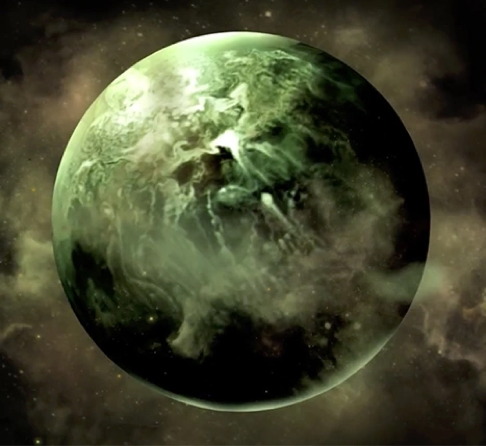
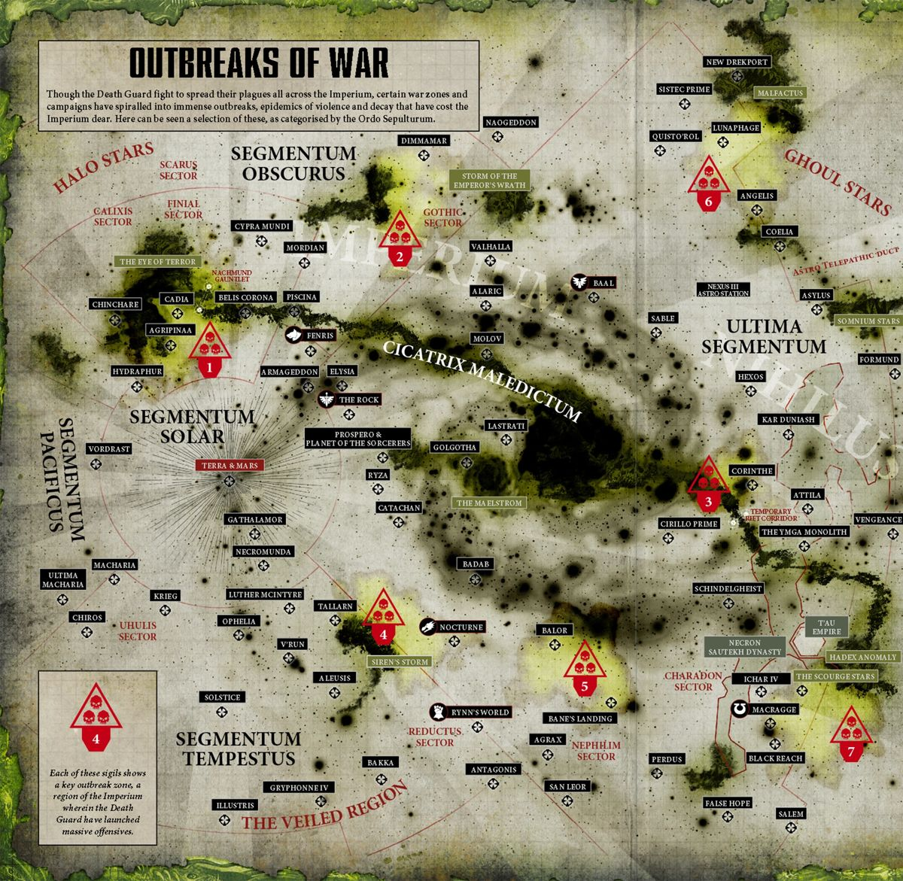
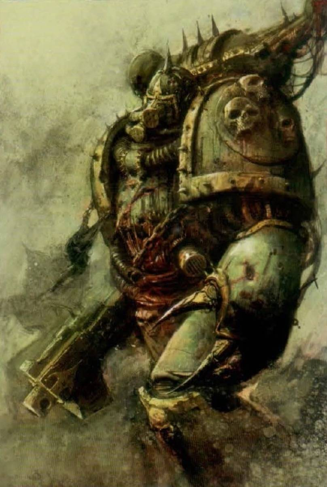

Death Guard
| Death Guard XIV Legion, formerly the Dusk Raiders | |
|---|---|
Badge of the Death Guard | |
| Founding | First Founding, c. 700.M30[a], in the closing years of the Unification Wars |
| Legion number | XIV |
| Primarch | Mortarion, the Death Lord (found 854.M30) |
| Present leader | Mortarion, Daemon Primarch of Nurgle; Typhus leads a host of his own |
| Homeworld | Barbarus (primarch and, after his coming, the Legion's recruiting world); Terra and Old Albia (the Dusk Raiders) |
| Fortress | The Plague Planet, a Daemon World in the Eye of Terror |
| Allegiance | Loyalist (until 005.M31); Traitor, Chaos (Nurgle) |
| Colours | Grey-white and jade (Great Crusade); sickly green and bone (since the Heresy) |
| Battle cry | "For Terra and Mortarion!" and "Count the Seven!" (before the Heresy); none since |
| Combat doctrine | Endurance, attrition and the grinding of the enemy on chosen ground |
| Notable battles | |
| Isstvan III, Drop Site Massacre, Terathalion, Siege of Terra, Kornovin, the Plague Wars | |
| Notable members | |
| Mortarion, Calas Typhon (Typhus), Nathaniel Garro | |
The Death Guard are the XIV Legion of the Space Marine Legions. They were raised in the closing years of the Unification Wars as the Dusk Raiders, and were renamed by their primarch, Mortarion, when he took command of them in the Great Crusade. Under Mortarion they were the Imperium's great infantry Legion, unmatched in the longest and bloodiest campaigns of the Crusade, a force whose doctrine was endurance and whose pride lay in its strength. In 005.M31 they followed their primarch into the rebellion of Horus, and on the way to the Siege of Terra the Legion was delivered by its First Captain into the realm of Nurgle, the Chaos power of decay and disease. The warriors who emerged were the first Plague Marines.[1][2]
The Legion that withdrew from Terra into the Eye of Terror was the only one of the Traitor Legions to leave in good order, and it has remained among the most coherent of them. Its warriors, who cannot die as long as the plague that is in them is alive, feel the weakness that it implies as shame, and their wish is to spread that weakness to the whole of the galaxy. For ten thousand years they have launched their attacks through the Cadian Gate and across the Imperium, carrying the diseases of the Plague God with them.[2][3]
In the Era Indomitus the Death Guard fought the Plague Wars, their greatest war against the Imperium since the Heresy. Their primarch, who had been absent from the material universe for many centuries, returned to lead them against the realm of Ultramar, and met his brother Roboute Guilliman in battle at the garden-world of Iax.[4]
Legion era
[edit]The Dusk Raiders
[edit]The XIV Legion was formed on Terra in the last years of the Unification Wars. The bulk of its human recruits came from the clans of Old Albia, in the northern Atlan wilderness of Europa, an old rival of the Emperor for the destiny of Mankind. The Albian warlords had overthrown the tyranny of the last descendants of their Unspeakable King and would not bend the knee to any new master. They met the Emperor's Thunder Warriors with steam-belching proto-Dreadnoughts and their own heavily armoured Ironsides, and the Unification was held in check at a terrible cost to both. The Emperor, who valued their courage, called a ceasefire and went before their parliament, unarmed, in white and crimson, to lay before them his vision of Mankind. The warlords accepted. It served the Emperor's purpose in two ways: it removed the strength of an unreliable ally into his armies, and it brought into his service the martial traditions of the most stubborn of the Terran clans.[1]
The Legion that they formed, the Dusk Raiders, took naturally to the tactics that its ancestors, the Ironsides, would have known. It was a heavy infantry force of stoic temper and excellent endurance, stubborn in defence and unbroken by the heaviest fire. Its other quality, as the name suggests, was a talent for sudden raids at dusk that took an enemy unawares.[1]
Mortarion
[edit]
The Legion's primarch was found in 854.M30 on Barbarus, a world of poisonous fog ruled by the necromancer-overlords, where Mortarion had killed his foster father's rivals, led the human settlers of the valleys against their masters and trained the Death Guard that he raised from among them. When the Emperor came and killed the overlord Necare himself, Mortarion kept his oath and gave his fealty, and kept for the rest of his life the grudge of a man who has been denied the vengeance that he wanted. He met the Dusk Raiders as a grim figure in a black robe, with a scythe in his hand, like the reaper of old Terran folklore. "You are my unbroken blades," he told them. "You are the Death Guard. By your hand shall justice be delivered, and doom shall stalk a thousand worlds." The words were engraved over the airlock door of the battle barge Reaper's Scythe.[1][5]
After Mortarion's coming, nearly all the Legion's recruits were drawn from Barbarus, beginning with the primarch's lieutenant Calas Typhon, who became its First Captain. The Barbarus-born took the Legion's character with them, and the Terran minority who kept the older traditions of the Dusk Raiders came to feel like outsiders. Mortarion reorganised the Legion into seven Great Companies. The number seven had an occult significance for him and for the culture of Barbarus, and each company was notionally to be seventy thousand strong, for a total of nearly half a million, a figure that the Legion never approached but which stayed as a measure of the primarch's ambition.[1][3]
The Great Crusade
[edit]The Death Guard fought without respite. They did not garrison and did not build. Their fleet went from one campaign to the next, resupplying on the move, and they tore down and slew, as one chronicler put it, with the inexorable progress of a contagion or a tidal wave. Mortarion's belief was that Mankind should be free of oppression and terror, and that the means to freedom were justified by the end, however savage. He trained his sons as perfect infantry, self-reliant and adaptable, armed with durable weapons that were easy to maintain and resupply. They chose the best ground and ground the enemy down upon it with massed formations. They were the anvil to others' hammers, and the bludgeon that battered a foe into submission.[1][5]
Some of the primarchs thought the Legion's tactics blunt. The honour roll said otherwise, and Horus used the Death Guard repeatedly as the anvil for the hammer of the Sons of Horus. Mortarion's Legion was a hardy one. The gene-seed was tempered by regimens of toxin and extreme environments, and the Legion's Barbarus-born recruits had an inherent resistance to poison and disease which the seed amplified. The Legion's Librarius was disbanded at the Council of Nikaea in 001.M31, to Mortarion's satisfaction, as he had seen what sorcery did to Barbarus. His closest brothers were Horus and Konrad Curze.[5]
Horus Heresy
[edit]The purge at Isstvan III
[edit]The Death Guard had been won over to the Warmaster before the war began. In Mortarion's eyes the Emperor was a pompous pretender who had taken a kingship that he himself had won on Barbarus. He judged that about a third of the Legion, the Terran survivors of the Dusk Raiders and others of the Legion's older traditions, would not follow him, and at Isstvan III in 005.M31 he sent them to the planet's surface, with the loyalists of the other Legions, in the knowledge that Horus meant them to die. A group under Battle-Captain Nathaniel Garro of the 7th Great Company escaped in the frigate Eisenstein and carried the news of the rebellion to Terra. The rest of the Legion fought at the Drop Site Massacre at Isstvan V in 006.M31.[2][5]
On Prospero, among the ruins of Tizca, Mortarion tried to persuade Jaghatai Khan to join the Traitors and was refused, and in the Second Battle of Prospero in 007.M31 the two primarchs fought until their fleets, fighting without orders, drew them apart. Mortarion then devastated the Prosperine worlds and destroyed the library-world of Terathalion with his Legion in 007.M31. There he seized a woman who was possessed by a daemon and questioned the creature to find out why his brothers served the powers of the Warp. The daemon told him that one of those powers had claimed him. He killed it with his bare hands and in the act used a psychic strength that he had always denied. It saluted him as it died as the Master of the Plague.[5]
The doom of the Death Guard
[edit]The First Captain, Calas Typhon, had learned in the Great Crusade of a different way. While serving with the Word Bearers he had been inducted by the Chaplain Erebus into the Seven-Pillared Lodge, one of the warrior lodges that spread among the Legions in the last days of the Crusade, and he had seen what the Astartes might become without the yoke of the Emperor's law. He was a hidden psyker, and the Chaos powers were to make him great. When the Death Guard fleet set out for Terra, in about 013.M31,[a] Typhon had the Navigators killed to a man on the pretext that they were traitors in the pay of Malcador the Sigillite, and assured Mortarion that his own psychic abilities would see the fleet through the Warp. Mortarion, who hated witchcraft, saw no alternative.[2]
Typhon delivered the Legion to Nurgle. The fleet was becalmed in the Warp, and the Destroyer Plague and the Rot, Nurgle's gifts, spread through its ships and the bodies of the warriors in them. The Death Guard, whose pride was their endurance, found that their resilience was now their enemy. They could not die, and in the agonies of the transformation their flesh swelled and ran, and their armour melted into new shapes. They became the first Plague Marines. Typhon, the author of the corruption, was rewarded most of all. His body became a colony of flies, and he emerged as Typhus, the Host of the Destroyer Hive. None suffered more than Mortarion, who endured the torment of Barbarus again with no Emperor to save him. At the limit of his endurance he gave himself and his Legion to Nurgle in exchange for an end to the pain. Nurgle accepted, and Mortarion became a Daemon Prince.[2][5]
The warriors who emerged from the Warp had lost their ivory armour and their jade heraldry for a sickly green. They were bloated, pockmarked and sorely changed, and their weapons and machines were powered by Warp sorcery and oozed gangrene. Some of the Legion embraced it, believing that they had passed through a needle's eye and proved themselves worthy of the god. Others hated the plague and the weakness that it implied, and resolved that the galaxy would be brought down to their level. Others were driven mad.[2]
The Siege of Terra
[edit]The fleet arrived in the Sol System after the siege had begun. At the Siege of Terra in 014.M31 the Death Guard were counted the last Legion to leave, retreating in good order while the loyalists dashed themselves against their warriors, who could not be killed. The Legion then withdrew with the rest of the Traitors into the Eye of Terror, where Mortarion led it.[2][5]
The Long War
[edit]
The Plague Planet
[edit]Mortarion claimed a Daemon World in the Eye of Terror, the Plague Planet, and shaped it into a copy of Barbarus. This time he took the place of Necare as its tyrant, and for ten thousand years he sat in a fortress at the top of its mountain. Nurgle soon raised him to the greatest of his Daemon Princes. He had finally been given a world of his own, a poisoned death world of horror and misery. The Death Lord had come home.[5][3]
Unlike the other Traitor Legions, the Death Guard did not break into warring bands, and Imperial scholars credit the authority of their primarch. Their attacks went out from the Eye in sustained campaigns, through the Cadian Gate. In 901.M41, at the Battle of Kornovin, Mortarion killed the Supreme Grand Master of the Grey Knights, Geronitan, and was struck down by Geronitan's successor, Kaldor Draigo, who carved his predecessor's name on the primarch's heart. Mortarion survived but was unable to return to the material universe for many years. Typhus, who had broken away from his master, went his own way, with a host of his own and a stronghold, and he was especially active in the 13th Black Crusade of 999.M41.[3][5]
Era Indomitus
[edit]

The opening of the Great Rift in 999.M41 and the return of Roboute Guilliman angered Mortarion deeply, and by Imperial records it was in this anger that he seeded seven plagues on Imperial worlds. He did not move against Guilliman at once. After the Noctis Aeterna, Nurgle's strength grew in the south of the Ultima Segmentum, and three systems, the Scourge Stars, fell to the Plague God. Diseases such as the Crawling Pustulence, Eyerot, the Plague That Walks and the Oozing Pox erupted among their formerly prosperous worlds, and wave upon wave of plague daemons and fanatical cultists overran the defence lines. Corrupt demagogues turned regiments of the Planetary Defence Forces against their comrades, and corpse mountains burned as the authorities tried to stop the tide, until each world fell to Nurgle.[4]
The Death Guard made these worlds their staging post and, from them, launched the invasion of Ultramar and Mortarion's return to realspace. Three spearheads entered the realm, attacking along a hundred fronts. The Ultramarines' reconstruction of the Plague Wars describes a plan of seven parts, beginning with the War of Flies, the assault on the Three Planets, the siege of the hive world Ardium and the Creeping Doom offensive against Espandor and Drohl. The Primaris Ultramarines of the Ultima Founding arrived in the Fleet Avenger and could do no more than slow the advance, and a Plague Fleet destroyed the realm's defence fleet and star fortresses one by one.[4]
Guilliman returned from the first campaigns of the Indomitus Crusade and stabilised the fronts, and his counter-offensive, the Spear of Espandor, broke the attack. He defeated a Greater Daemon at the Gates of Parmenio. At Iax, a garden world that had been made a hospital for the sick, Mortarion and Guilliman met in person and fought each other to a standstill, and the plague armies withdrew to the Scourge Stars under cover of a virus bombardment that added to the suffering of the world. Nurgle's new realm in the material universe was at the same time under attack from the Blood God's hosts. The Plague Wars were the first time in ten thousand years that Mortarion had appeared in the material universe in strength, and Imperial scholars disagree over when they began and which wars belong to them, since the earliest accounts date their opening to before the Great Rift.[4]
Organisation
[edit]Before the Heresy the Legion was organised in the seven Great Companies. In Mortarion's reorganisation, rank badges and decoration were of small account, and the Legion was known for its heavy weapons and its massed ranks of infantry. The primarch's bodyguard were the Deathshroud, silent warriors in armoured robes who carry scythes.[1][3]
The post-Heresy Legion kept the seven and made it sacred. Since the Rift, Mortarion has restored a formal structure of the old form, so that the Death Guard are among the most ordered of the Traitor Legions. Its seven Plague Companies each number many thousands of warriors, and each is led by a Lord Commander who is usually a Death Guard Lord or a Daemon Prince and is the host of one of Nurgle's most terrible diseases. Each company is divided into seven sepsis cohorts, each of about seven hundred Plague Marines with their infected auxiliaries, armour and daemon engines; each cohort into two maladictums; and each maladictum into seven colonies, of seven squads of seven warriors under a Death Guard Lord. The first colony of a maladictum is often made up of the Legion's Terminators, the Blightlords. In practice the Legion is divided, like others, into thousands of war zones, and its warbands, which are called vectoriums, differ greatly in size and character.[3][4]
| Formation | Composition |
|---|---|
| Plague Company | One of seven; commanded by a Lord or Daemon Prince, host of a disease |
| Sepsis cohort | One of seven in a company; about 700 Plague Marines with auxiliaries |
| Maladictum | One of two in a cohort |
| Colony | Seven squads of seven under a Death Guard Lord |
| Blightlords | Terminator-armoured veterans |
| Deathshroud | The primarch's bodyguard |
| Vectorium | An independent warband of the Legion's fighting forces |
Beliefs and combat doctrine
[edit]Before the Heresy the Legion believed what its primarch believed: that humanity must be freed from those who oppressed it, whatever the cost. The faith in inner strength that this belief required led to a proud contempt for the weak, and when the Rot struck them in the Warp, their pride was shown to them. What replaced it was a deep despair and self-hatred, and the sole desire to infect the strong, kill the weak and bring everyone and everything to rot. Their own debasement would no longer seem as shameful, they believe, if Nurgle's pestilence dragged the rest of the galaxy down to the same level.[3]
Their doctrine is the same as it was in the Great Crusade: endurance. The Death Guard advance at a steady pace, absorb the enemy's fire as it has no effect on them, and bring a grinding fire to bear on whatever stands in their way. Their weapons are the old weapons of the Legion, easy to maintain, and the plague weapons of Nurgle, which are diseases. They keep no warcry, believing that death, like a plague, should come silently. Imperial reports note a cheerfulness among some of the Plague Marines that is more disturbing than anger. They count in sevens, and they take little care to hide the damage that their bodies suffer.[3]
Gene-seed
[edit]The gene-seed of the Death Guard, tempered on Barbarus, gave a hardiness that made the Legion the most resilient of the First Founding. Since the Warp voyage it has been altered by the Plague God's gifts: a Plague Marine can survive wounds that would kill any other warrior, because the disease that fills him keeps him alive. He feels little pain, and the rot and the flesh feed on one another.[6][3]
Heraldry
[edit]The Legion's badge shows three skulls in a triangle on a roundel. In the Great Crusade its armour was a grey-white ceramite with jade-green markings recalling the mud that Mortarion's first warriors coated their iron with, and little decoration or rank. Since the Heresy the Legion's armour has been a corroded green and bone, and its warriors mark it with the symbols of Nurgle.[7]
Notable members
[edit]| Name | Era | Notes |
|---|---|---|
| Mortarion | Legion and Era Indomitus | Primarch; Daemon Primarch of Nurgle |
| Calas Typhon | Legion and after | First Captain; later Typhus the Traveller, Host of the Destroyer Hive |
| Nathaniel Garro | Legion | Battle-Captain of the 7th Great Company; the loyalist who carried the warning to Terra |
Timeline
[edit]| Date | Event |
|---|---|
| c. 700.M30 | The XIV Legion, the Dusk Raiders, is raised on Terra in the First Founding from the clans of Old Albia.[a] |
| 798.M30 | The Great Crusade begins. |
| 854.M30 | Mortarion is found on Barbarus and takes command; the Legion is renamed the Death Guard and recruits from Barbarus. |
| 001.M31 | The Council of Nikaea disbands the Librarius. |
| 005.M31 | Isstvan III: Mortarion sends a third of his Legion to die; Nathaniel Garro escapes in the Eisenstein. |
| 006.M31 | The Legion fights at the Drop Site Massacre on Isstvan V. |
| 007.M31 | Second Battle of Prospero against the White Scars; the destruction of Terathalion. |
| 009.M31 | The Death Guard invade Molech with Horus in the Battle of Molech. |
| c. 013.M31 | Typhon kills the Navigators; the fleet is becalmed in the Warp and the Legion is given to Nurgle as the first Plague Marines.[a] |
| 014.M31 | Siege of Terra; the Death Guard are the last Legion to leave, in good order. |
| After 014.M31 | Mortarion claims the Plague Planet in the Eye of Terror and is raised to a Daemon Prince.[a] |
| 901.M41 | Battle of Kornovin: Mortarion slays Supreme Grand Master Geronitan and is struck down by Kaldor Draigo. |
| 999.M41 | Typhus fights in the Thirteenth Black Crusade; the Great Rift opens and Mortarion seeds seven plagues. |
| Early M42 | The Plague Wars: the invasion of Ultramar from the Scourge Stars; Mortarion and Roboute Guilliman fight at Iax. |
See also
[edit]Notes
[edit]References
[edit]- ^ a b c d e f g Liber Primarchus (M32, revised M41). Administratum Archive, Terra.
- ^ a b c d e f g Chronicles of the Heresy (sealed). Logos Historica Verita, Terra.
- ^ a b c d e f g h i Lexicanum Martialis. Officio Militaris.
- ^ a b c d e Records of the Indomitus Crusade (ongoing). Office of the Lord Commander.
- ^ a b c d e f g h i Annals of Barbarus and the Death Guard (M32, revised M41). Administratum Archive, Terra.
- ^ Codex Imperialis (rev. 980.M41). Adeptus Terra.
- ^ Insignium Astartes (rev. M41). Ordo Astartes, Terra.